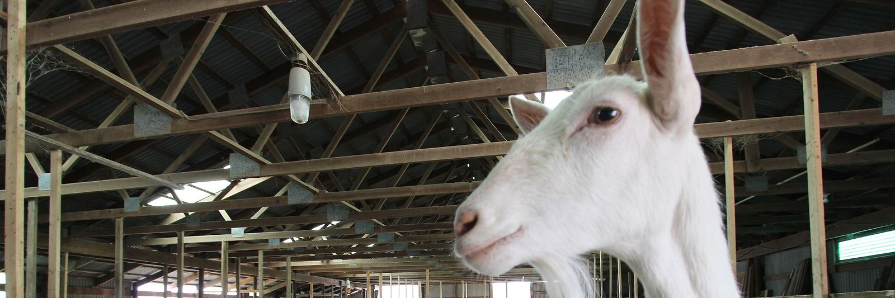
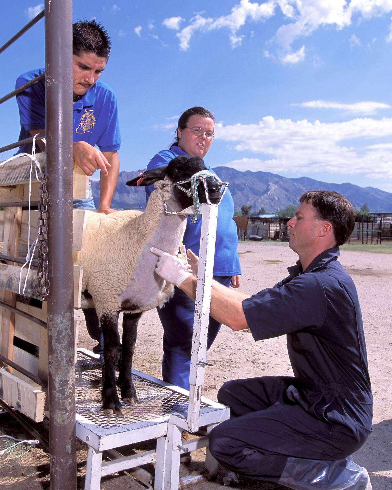
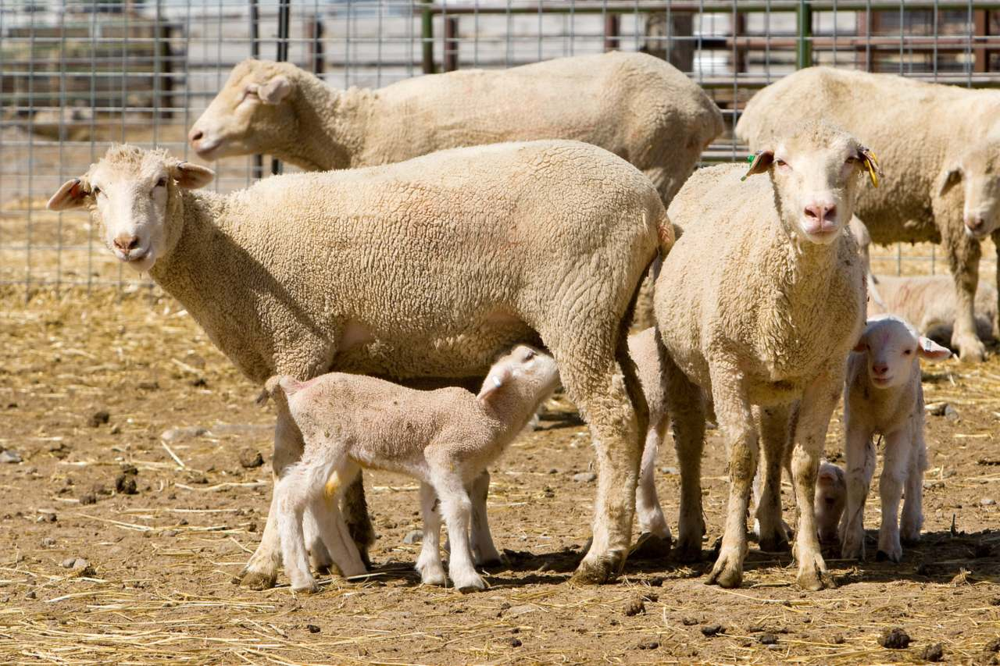

Pregnancy testing for goats and sheep
This page is for goat dairies and sheep flocks: when to draw, how to draw, how to ship the tubes and what the report tells you.
Goats and sheep from 30 days
Wisconsin has more milk goats than any other state (USDA count, January 2025). Goats and sheep test from the same 2cc blood sample as cattle, drawn from the jugular vein, from 30 days after breeding, on the Small Ruminant Pregnancy Test Submission Form. Most goat and sheep herds breed in the fall and check through the winter.
When can I test?
Goats and sheep: 30 days after breeding. If the buck or ram ran with them, enter the day he came out.
Days from shipping to arrival at the lab. Overnight means a next-day carrier.
Goats and sheep can be sampled 30 days after breeding. If that date is today or past, she can be sampled now. For does and ewes that kidded or lambed recently, ask when you call.
Boxes that reach the lab Monday to Wednesday are in that Thursday's report. With Priority Mail, usually 2 days, ship by Monday. With overnight shipping, ship by Tuesday. A box shipped later is in the next week's report.
Priority Mail usually takes 2 days but is not guaranteed. Shipping a day earlier, or overnight, leaves a margin. The Postal Service does not deliver on federal holidays, and next-day carriers do not deliver on New Year's Day, Memorial Day, Independence Day, Labor Day, Thanksgiving or Christmas, or on the Friday or Monday when one of those is observed. A box that would arrive on a weekend or one of those days counts from the next lab day. If the report Thursday is a holiday, call (715) 653-2201 for that week's report day.
Drawing from the jugular vein

Goats and sheep are not tail bled. The sample comes from the jugular vein on the side of the neck. Have a helper hold the animal against a wall or in a stanchion with the head raised and turned slightly away. Press a thumb into the jugular groove low on the neck so the vein fills, slide a new needle into the raised vein at a shallow angle, draw 2cc into a new red-top tube, the same kind used for cattle, and release the thumb before you withdraw. Use a new needle for every animal.
Samples can be collected with a syringe and needle or with the vacuum tube system.
New to drawing from the neck? When you call, Dr. Pearson can talk your crew through it, or your own veterinarian can show them.
Packing and shipping the tubes
- Number each tube in the order of the form, and write the animal ID on it.
- Package tubes in padding for safe delivery.
- Pregnancy samples need no ice. If the box also holds samples for other tests, call the lab before you pack it.
- Write "CAPRINE BLOOD SAMPLES" for goats or "OVINE BLOOD SAMPLES" for sheep, and "Exempt Animal Specimen", on the outside of the box.
- Place the completed submission form and payment in their own zip-lock bag inside the box. Checks are payable to ADDC.
- Mail the box to 362 310th Avenue, Frederic, WI 54837. Samples that reach the lab by Wednesday are reported Thursday.
The packing and shipping page has the full steps, the supplies list and a ship-by planner.
Pregnant, open, or recheck
BioPRYN reports each animal as pregnant, open, or recheck. A recheck means the reading fell between the two ranges. Dr. Pearson reads every plate.
Every testing client can call or email Dr. Pearson about a result: (715) 653-2201 or info@dairydoctor.com.
Results come back by email, fax or phone, whichever you mark on the form.

A pregnant result is true for the day the blood was drawn.
What each result means, and the limits of a blood test: how your results are read.
Download your submission form
More animals than lines on the form? Print a second copy. Running low on tubes or needles? Order more on the same form.
Price per test: see pregnancy testing.
First box? Please call our office before your first submission, at (715) 653-2201, or send the new client form. We'd like to meet you. A call settles which supplies you need.
Other tests for goats and sheep
BVD PI testing is for cattle and bison; goat and sheep herds should call the lab and ask about disease monitoring instead. Call (715) 653-2201, Monday to Friday, 8 a.m. to 4 p.m. Central.